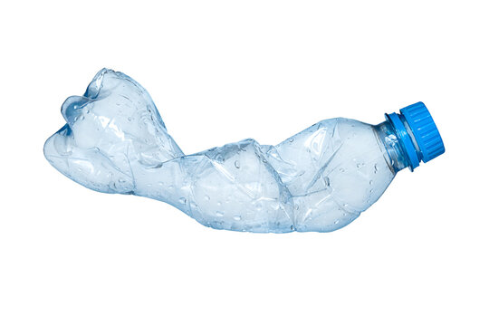

Recycling plastic bottles at home is a simple yet effective way to reduce waste and
contribute to environmental sustainability. Here are some steps and creative ideas for recycling plastic
bottles at home:
1. Basic Recycling:
- Rinse and Clean:Before recycling, rinse the bottle to remove any residues.
- Remove Labels and Caps: Some recycling centers require the removal of labels and caps since they
can be made of different materials.
- Separate Plastics: Make sure to check if the plastic is recyclable in your area. Many plastic
bottles are made of PET (Polyethylene Terephthalate), which is widely accepted by recycling programs.
2.Reusing Plastic Bottles:
- DIY Planters: Cut the bottle in half, fill it with soil, and plant small herbs or flowers.
- Bird Feeders: Create a bird feeder by cutting a hole and adding a dowel for birds to perch on.
- Storage Containers: Use the bottom part of the bottle to store small items like stationery,
screws, or other household objects.
- Watering Can: Drill holes in the bottle cap, fill the bottle with water, and use it to water
plants.
3. Creative Projects:
- Eco-Bricks: Fill plastic bottles with non-recyclable plastics, such as plastic wrappers, to create
sturdy "eco-bricks" that can be used for building.
- Decorative Lamps: Cut the bottle and use colored paper or LED lights to turn it into a decorative
lamp.
- Plastic Bottle Brooms: Using multiple bottles and cutting their bottoms, you can assemble a broom
for outdoor cleaning.
4. Art and Crafts:
- Plastic Bottle Flowers: Cut the bottles into petal shapes, paint them, and create vibrant,
decorative flowers.
- Jewelry Organizer: Use the bottom parts of small bottles as sections in a jewelry holder.
- Kids’ Toys: Use plastic bottles to create toys like rockets, cars, or even dolls.
By finding creative and practical uses for plastic bottles, you can minimize waste while adding some
functionality or beauty to your home.